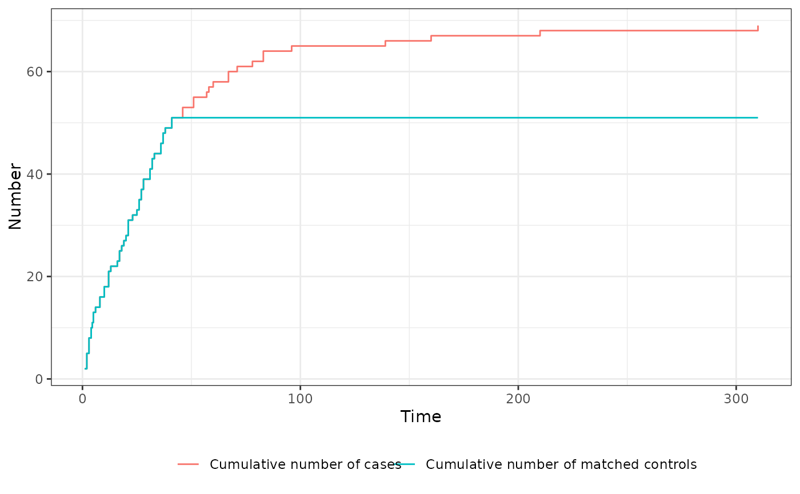

Plot cumulative number of matched cases and controls
plot.match_time.RdGiven a match_time object created using the match_time function, this plot method displays the cumulative number of included cases, the cumulative number of matched controls and the number of potential controls available over the observed time range.
Arguments
- x
A
match_timeobject created using thematch_timefunction.- include
A character vector including one or more of
"cases","controls"and"potential_controls". Controls whether the plot should contain the cumulative number of cases, cumulative number of controls and number of potential controls at t respectively.- xlab
A single character string specifying the label of the x-axis, defaults to
"Time".- ylab
A single character string specifying the label of the y-axis, defaults to
"Number".- gg_theme
A
ggplot2theme that will be used for the plot.- linealpha
A single numeric value specifying the transparency level of the lines.
- linetype
A single character string specifying the type of the drawn lines.
- linewidth
A single numeric value specifying the width of the drawn lines.
- ...
Currently not used.
Details
If ratio=1 was used and the matching was successful for all cases, the cumulative number of cases and the cumulative number of events will be exactly the same for all points in time, meaning that the curves will be on top of each other. The plot method therefore offers a simple and fast way to check whether (and if so, when) issues with finding suitable controls ocurred. It uses only the $trace object included in the input x to create the plot. Since it returns a standard ggplot2 object, it can be easily customized by users.
Note that the displayed number of cases is the actual number of cases at t in the supplied data, which fufilled the inclusion criteria (if any) at that point in time, not the number of cases that received any matches at that point in time.
Examples
library(data.table)
library(MatchTime)
# only execute if packages are available
if (requireNamespace("survival") & requireNamespace("ggplot2") &
requireNamespace("MatchIt")) {
library(survival)
library(ggplot2)
library(MatchIt)
# set random seed to make the output replicably
set.seed(1234)
# load "heart" data from survival package
data("heart")
# perform nearest neighbor time-dependent matching on "age" and "surgery"
# (plus exact matching on time)
out <- match_time(transplant ~ age + surgery, data=heart, id="id",
match_method="nearest")
# plot all three statistics over time
# NOTE: here we can see that the green line (cum. no. matched controls)
# and the red line (cum. no. cases) is exactly the same up until
# around t = 45, at which point no controls are left (blue line at 0)
# the number of cases still grows, but no controls are matched anymore
plot(out)
# plot only controls and cases
plot(out, include=c("cases", "controls"))
}
#> Warning: glm.fit: algorithm did not converge
#> Warning: glm.fit: fitted probabilities numerically 0 or 1 occurred
#> Warning: glm.fit: algorithm did not converge
#> Warning: glm.fit: fitted probabilities numerically 0 or 1 occurred
#> Warning: glm.fit: fitted probabilities numerically 0 or 1 occurred
#> Warning: glm.fit: fitted probabilities numerically 0 or 1 occurred
